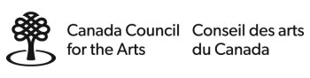

Born in Seoul, Korea
Currently lives and works in Guelph, Ontario
Currently lives and works in Guelph, Ontario
EDUCATION
2009
Master of Fine Arts, University of Guelph, Guelph, Ontario
2007
Bachelor of Fine Arts, Alberta College of Art and Design, Calgary, Alberta
1998
Bachelor of Arts, Sogang University, Seoul, Korea
SOLO EXHIBITIONS
2015
Nothing Much, Georgia Scherman Projects, Toronto, Ontario
2013
Repeat, Georgia Scherman Projects, Toronto, Ontario
2013
Procès, Optica, Montréal, Quebec
2011
being, thing, something, Georgia Scherman Projects, Toronto, Ontario
2010
Some Deviation, Georgia Scherman Projects, Toronto, Ontario
2009
That’s How It Is, Macdonald Stewart Art Centre, Guelph, Ontario
2006
Open System, Marion Nicoll Gallery, Calgary, Alberta
GROUP EXHIBITIONS
2015
Parallel Room, DNA Art Space, London, Ontario
2015
In the Making, University of Saskatchewan College Art Gallery, Saskatoon, Saskatchewan
2014
In the Making, Illingworth Kerr Gallery, Calgary, Alberta
2013
PREDISPOSED (…to thinking through the eye of mutual convenience), Hyang Cho, K. Nicol and Joseph Beuys, curated by Ihor Holubizky, McMaster Museum of Art, Hamilton, Ontario
2012
Letter Rip!, Onsite [at] OCAD, Toronto, Ontario
2012
----------, curated by Jennifer Simaitis, OCAD Graduate Gallery, Toronto, Ontario
2012
Sediment, G Gallery, Toronto, Ontario
2011
The Black and the White: An Allegory of Colour, 5th KWAG Biennial, curated by Robert Enright, Kitchener-Waterloo Art Gallery, Kitchener-Waterloo, Ontario
2011
Autofunction, curated by Derek Sullivan and Shane Krepakevich, G Gallery, Toronto, Ontario
2011
Permutations, Truck Gallery, Calgary, Alberta
2009
1:15 – University of Guelph MFA Show, Georgia Scherman Projects, Toronto, Ontario
2007
Hit or Miss – An Exhibition of Contemporary Drawing, Triangle Gallery, Calgary, Alberta
2006
That Which Remains, Little Gallery, University of Calgary, Calgary, Alberta
ARTIST RESIDENCIES
2010
Theatre of Erosion or I Hate Work That is Not a Play, Banff Centre for the Arts
GRANTS
2015
Ontario Arts Council, Exhibition Assistance Grant
2014
Canada Council for the Arts, Project Grant for Visual Artist
2014
Ontario Arts Council, Artist Project Grant
2013
Ontario Arts Council, Exhibition Assistance Grant
2012
Ontario Arts Council, Artist Project Grant
I would like to acknowledge funding support from Canada Council for the Arts and Ontario Arts Council.
